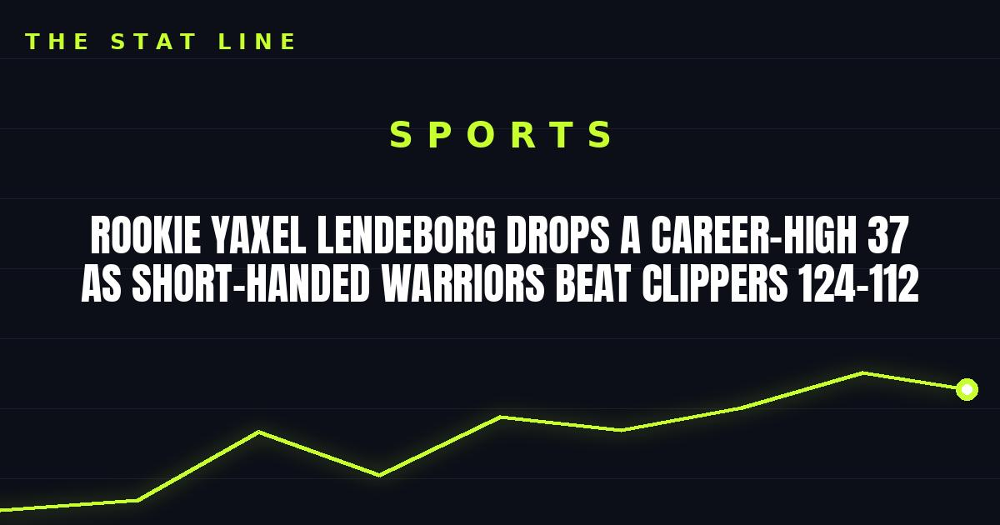

Rookie Yaxel Lendeborg Drops a Career-High 37 as Short-Handed Warriors Beat Clippers 124-112
Two days after calling Friday's game the worst of his life, rookie Yaxel Lendeborg scored a career-high 37 points to carry the Warriors past the Clippers without Curry and Green.

Two nights after the worst game of his young life, Yaxel Lendeborg played the best one. The rookie scored a career-high 37 points on Sunday night, carrying a short-handed Golden State team to a 124-112 win over the Los Angeles Clippers at Chase Center.
The line: 37 points on 13-of-19 shooting, 6-of-11 from three, 5-of-6 from the line, plus four rebounds and six assists in 34 minutes. He did it with Stephen Curry and Draymond Green both resting on the front end of a back-to-back, as the Warriors' number one offensive option, in just his seventh career game.
From rock bottom to career high
Friday against the Lakers, Lendeborg had called it himself: the worst game of his life. Six points, one rebound, five turnovers, fouled out in 24 minutes. Sunday, he was nearly perfect in the first half, scoring 19 points on 7-of-8 shooting with three assists, and the Warriors led 63-57 at the break after trailing 37-29 at the end of the first quarter.
He kept pouring it on. A three early in the fourth gave him a new career high of 32, getting Curry out of his seat on the sideline, and he kept hunting, finishing five short of 40. Twenty-four of his 37 points came between the second and third quarters, including a 14-point outburst in the second that turned the game around.
The previous high had been 31 at Denver last Monday, the game that started Golden State's winning streak. Sunday made it two 30-point games in his first seven, putting Lendeborg alongside Hall of Famers Wilt Chamberlain and Rick Barry as the only Warriors ever to do that. His 37 points were the most by a Warriors rookie since Curry himself scored 42 in the final game of his rookie season, on April 14, 2010, at Portland.
The context that makes it bigger
Lendeborg is 24, the 11th overall pick, a player whose age reportedly scared some teams off on draft night. He played 112 college games between UAB and Michigan and had exactly one 30-point game in all of them. Through seven NBA games, he already has two, and four outings of at least 26 points in his last five.
He did not do it alone. De'Anthony Melton scored 21, Brandon Williams and Brandin Podziemski added 17 apiece, with Podziemski pairing his with eight rebounds and eight assists, just short of the triple-double watch he carried into the fourth. Rui Hachimura led the Clippers with 24, but Los Angeles lost its fifth straight and played without Brandon Ingram, Bradley Beal, Jordan Miller, and Max Strus.
The win was Golden State's fourth straight, improving the Warriors to 4-3 and giving them a winning record for the first time since March 8, when they were 32-31 last season. Curry and Green are expected back Monday against Phoenix. The question now is not whether Lendeborg belongs in the rotation. It is how big his role gets when the stars return.
Sources
• ESPN box score, Clippers at Warriors, November 1, 2026 (event 401909905)
• Reuters / Field Level Media game report, November 1, 2026
• ESPN / AP game report, November 1, 2026
• NBC Sports Bay Area observations, November 1, 2026
• USA Today game report, November 1, 2026
Gear up: Fanatics